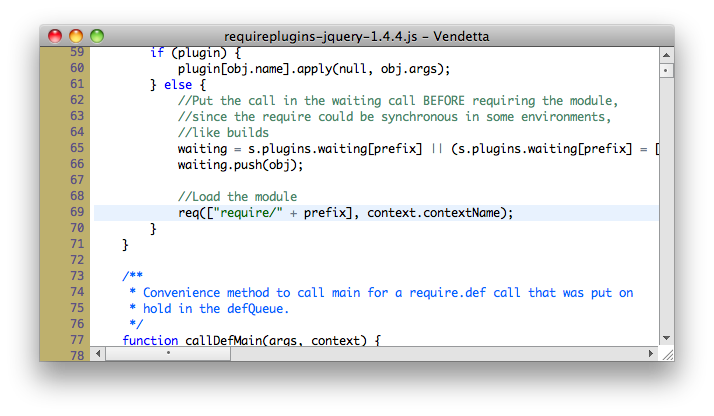
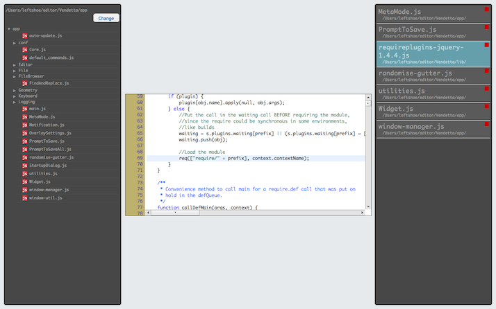

Vendetta
Vendetta is a radical departure from other text editors. Traditional UNIX terminal editors such as VI and Emacs are powerful and have stuningly minimal UIs, however there design was restricted by the technical constraints of the mouseless, text-mode displays of the day. Vendetta follows these editors in spirit. Vendetta provides features typical of modern editors, such as tabs and a file browser pane, without cluttering the core UI.
Vendetta's most revolutionary feature is META-mode. Entering META-mode by pressing ESC exposes all the core features of Vendetta, in an intuitive, full-screen display, allowing 'meta' tasks to easily be performed, such as switching open tabs or opening new files. Most of a users time is spent actually editing, and so these extra features don't waste screen real-estate when they are not being used.
Open files are shown in the document pane to the right. This has several advantages to the tradional horizontal tab bar. It allows more infomation about each document to be shown, and a large number of documents can be open at once, without becoming overwhelming.